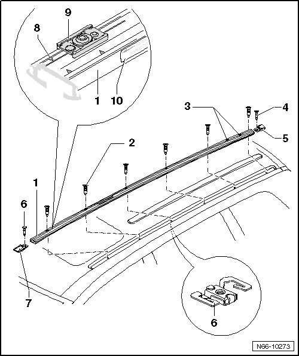

Guide Rail Assembly Overview
Roof Luggage Carrier
Guide Rail Assembly Overview

1 Guide rail
• Removing and Installing, refer to --> [ Guide Rail ] Roof Luggage Carrier
2 Bolt
• Observe bolting sequence, refer to --> [ Guide Rail Bolting Sequence ] Guide Rail Bolting Sequence
• Bolts are micro-encapsulated, new ones should always be used
• Quantity: 6
• 10 Nm
3 Normal park position marks
• For roof luggage carrier bar if it is not being used.
4 Rivet
• For securing end pieces
5 Rear end piece
• Only to be used on vehicles with roof luggage rack or basket
• Not on vehicles with roof rail
6 Cage nut
• Installed from beneath roof, can only be replaced with headliner removed
7 Front end piece
• Only to be used on vehicles with roof luggage rack or basket
• Not on vehicles with roof rail
8 Notches
• For securing seal
9 Seal
• When installing guide rails, new seals should always be used
10 Sticker
• With "direction of travel and an arrow" inscribed